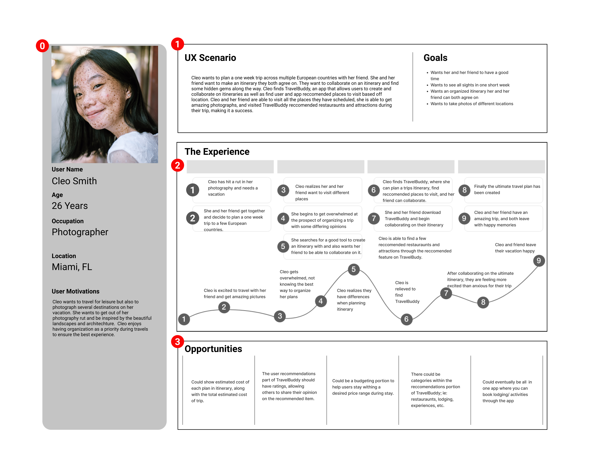

Kristen Talbot
For my first ever UX project during my Georgia Tech UX/UI bootcamp, we were challenged with creating an app that solves common issues while traveling. We were instructed to follow the entire design process, of which was researching, defining the problem, ideation, prototyping, and finally, testing and iterating. Initially, the journey required to get to the final product was intimidating, though with the help of classmates, my TA's and Instructor, I was able to reach an end product that I was proud of all while learning and growing my design skillset.
UX Designer
Myself
One Week
For the research phase, I conducted five one-on-one interviews with a diverse set of interviewees in order to gain a wide variety of responses. From what I gathered during these interviews, I found that many of the users felt their trips were less stressful and more meaningful of experiences when they planned what they were going to be doing prior to leaving. Four out of the five interviewees also stated they did budget their trips to some degree, whether that be with a tool like Excel or just intuitively. Many also reported that they enjoyed collaborating on a travel itinerary with their friends so they don't have any surprises or disagreements while on vacation. Out of those interviewed, only two out of the five currently used a tool (that being excel) to plan their itineraries, while others cited they did not currently make an itinerary due to lack of finding a suitable tool. The biggest pain points/ stressors for those interviewed were:
Once I analyzed the findings from my research, I then defined the problem statement;
"Travelers need a better way to plan and organize their itinerary and have the option to collaborate with others because planning a trip, especially with a group, can be stressful, disorganized, and lead to conflict.”
After this, I created a proto-persona modeled after a potential user of TravelBuddy. Something to note for the proto persona was the mentioning of her struggle as well as her need to stay on budget while traveling.
In the early stages of this project, I was leaning towards creating an itinerary and budgeting app, though my Instructor
advised me to only focus on one issue, since the timeframe to complete the project was short and because of the potential scope creep.
To help digest the information I gained from the interviews, I also created an Affinity Diagram, a User Persona, and Empathy Map in order to better define key pain points and potential users and their needs.
During this phase I started to form the story of a specific user who would benefit from this app; I created the user insight statement, "Cleo, who works as a travel photographer needs an easier way to stay organized during travels because she doesn't enjoy her vacation when she plans on the go, concerned she may miss out on activities she wants to do due to poor planning."
With the use of a feature matrix, I then planned what features would most benefit TravelBuddy users based on my research findings. I decided it would be best to create a community forum page where users could post or find advice & recommendations based on the users current location. They would ideally use this feature while at their destination for spur of the moment travel inspiration. I then decided to add a collaboration feature to TravelBuddy, so if other travel companions download the TravelBuddy app, they are able to share and collaborate on the same itinerary.
For this user journey, Cleo is traveling with a friend to multiple countries in Europe. She and her friend both have different motives for traveling, and Cleo is afraid of butting heads if they disagree on where to visit. They also are only visiting for a short time, so they want to make the most of their trip, ideally leaving with no regrets. Cleo figures the best way to make the most of their trip is to plan ahead, so they can collaborate and know what to expect day to day during their travels. Through this need, Cleo and her friend download TravelBuddy, and are able to collaborate on an itinerary they are both happy with.
During this phase, I also had experience creating a storyboard, user scenario, as well as the value proposition statement, "Take the stress out of traveling with TravelBuddy, whether you’re going solo or plan to collaborate with friends, create your ideal itinerary to ensure the ultimate travel experience."
Beginning the prototyping phase, I created some very low fidelity mockups of the app I had envisioned.
Truthfully, looking back six months later with the experience I have gained, there is so much I would change during this phase.
Though I do believe this project is important to add since it shows my growth as a designer. Nonetheless, the concept was there, and I still stand behind
this app as something that would benefit a great amount of users.
After I created the low fidelity wireframes, I moved on to creating my high/mid fidelity prototype. The instructions during this phase
were slightly unclear as to whether or not we were able to add colors and imagery, which is why I refer to it as partially mid-fidelity. Below are screenshots from
Figma showcasing some of the features of TravelBuddy.
For the usability testing portion, I conducted Guerrilla Testing with my final prototype. To keep the testing informative as well as short and simple I asked users to complete three tasks; create an account with email, navigate to the community and app recommended places to visit, and finally, add a destination to your itinerary for January 13th.
For the most part, the results for the Guerrilla Testing was very promising, one statistic that caught my attention as a cause of concern was that only half of those tested successfully completed task 2. Referring to my notes during the testing, I was able to conclude that it would be helpful to mention this feature during the onboarding process of the app, clearly stating which tab the user can navigate to in order to utilize this feature.
TravelBuddy was my first ever UX/UI project, and during this project, I was learning all the features of Figma as well
as design fundamentals. With that, there is lots of room for improvement, but the bones are there. I have already begun
changing some of the UI of this project, of which I was once very happy with. It is very telling that only over the course of a few
months, my design standards and aesthetic has already changed (I would say for the better). It will be interesting to see how much more
I will grow as a designer as my journey is has really just begun.
For the future of TravelBuddy, I hope to build out more of the functionality so it feels like a real application more than just a limited prototype. Specifically,
I would design more on creating a community post as well as the UI for writing a note within the "itinerary" tab.
I also hope to build out the features that would be included when you share with a friend since the experience would be slightly different.
Finally, I would add another tab where a Google Map is displayed showing the locations of all the activities added in the users itinerary, then based off those locations
it would recommend other activities nearby that users could also add to their itinerary. I believe if I were to add this feature, it would replace the existing explore tab, though I do strongly
believe it to be a feature more users would utilize and enjoy due to its ease of use and visualization it offers.